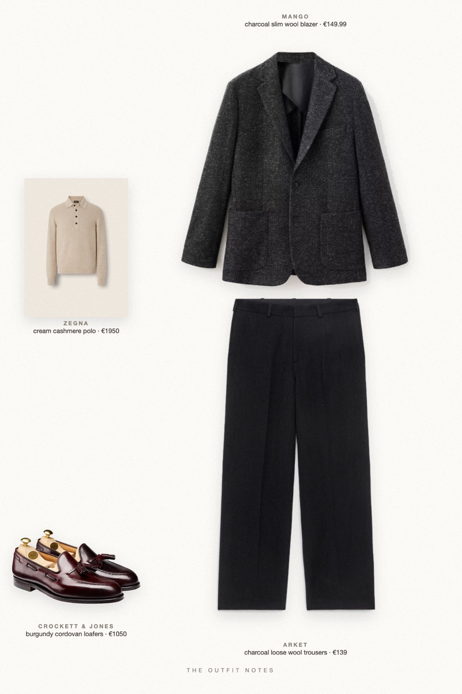
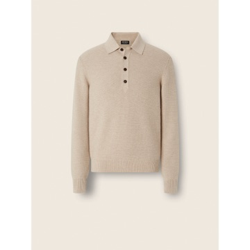

Candlelit Cream
charcoal blazer, cream polo

What to wear for Christmas dinner, men's edition: a charcoal wool-blend Mango blazer over a cream cashmere polo (Zegna Oasi), charcoal pleated wool trousers from ARKET and burgundy cordovan Crockett & Jones. Classy holiday outfit, semi formal, with an old money mood.
The pieces
This page contains affiliate links: if you buy through them, we may earn a commission at no extra cost to you. Disclosure.
 Mango
Mango
Charcoal slim wool blazer
Shop
Zegna
Cream cashmere polo
Shop ARKET
ARKET
Charcoal loose wool trousers
Shop Crockett & Jones
Crockett & Jones
Burgundy cordovan loafers
Shop
Prices are indicative, taken when the look was published, and may have changed. Pictures of the outfit are AI-generated illustrations of real products; the product photos are the retailers' own.
Published 2 October 2026.